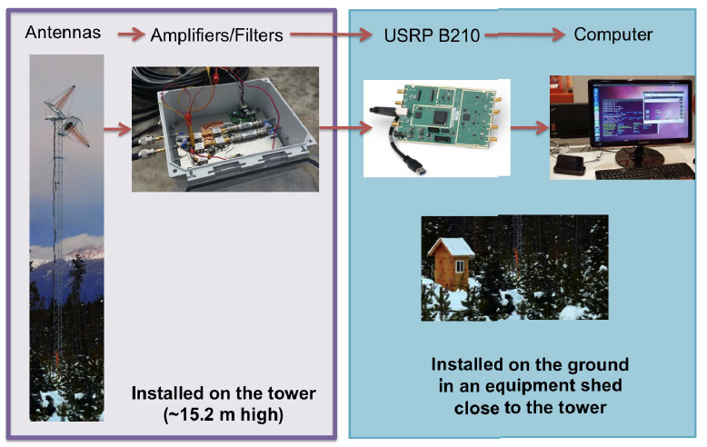
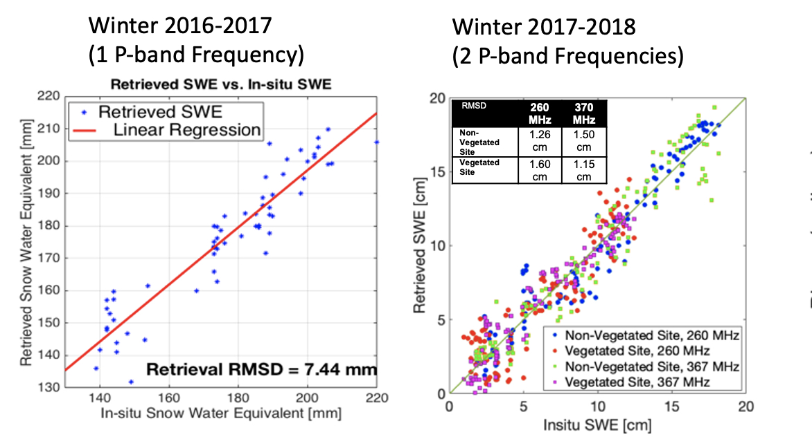

SoOp Tutorial
Contents
SoOp Tutorial¶
Contributors: Xiaolan Xu1, Rashmi Shah1, Simon Yueh1
1 Jet Propulsion Lab, California Institude of Technology
Learning Objectives¶
Signals of Opportunity Concept Introduction
P-band Application for Terrestrial Snow
Validation through Tower Measurement
Signals of Opportunity (SoOP) Concept¶
Re-utilizing powerful satellite transmissions as illumination sources for bistatic radar. SoOp has some beneficial characteristics of both active and passive microwave techniques, as well as its own unique features.
- High signal-to-noise ratio resulting (forward-scatter configuration)
- Direct signal for calibration
- Resolution set by the signal bandwidth and T/R configuration
- Protected spectral bands can be used for science applications
- Significantly cheaper than conventional active microwave sensors
- Less impact by the Radio Frequency Interference
Why P-band for Snow?¶
P-band Transimited Signals: MUOS¶
MUOS is a U.S. Navy communication system, that consists of five geostationary stationary satellites and has almost global coverage.
MUOS |
|
|---|---|
Operator |
USnavy |
Frequency |
240-270 MHz/ 360-380 MHz |
Orbit |
GEO |
EIRP |
27 dBW/ 43dBW |
Polarization |
RHCP |
Bandwidth |
5 KHz, 25 KHz/ 5 MHz |
Modulation |
PSK |
P-band Penetration suitable for mountainous deep snow¶
The P-band signal of opportunity stands out relative to other available signals for its ability to characterize deep snow that occurs in mountainous environments, and to penetrate through forest canopies.

Phase Measurement vs. SWE¶
We recorded both direct signals and reflected signals and cross-correlation them to estimation of time delay or path delay (Pd). The path delay can be directly related to SWE.
\(\Delta\phi\) is the phase change between two scenes, \(f\) is the frequency, \(a\) depends on incidence angle, \(SWE\) is the snow water equivalence.
The concept is similar to the repeat-pass radar interferometry concept, which is based on phase changes could provide a high-resolution mapping of SWE, but will require a good coherence between two passes, high transmit power and a large antenna, as typically needed for spaceborne SAR based on radar backscattering. Applying the radar “phase-change-detection” concept to reflected SoOp from digital communication satellites, we analyze the phase-SWE relationship and impact of various factors. The difference between SoOp and SAR geometries is that the SoOp concept obtains data from the forward scattering path along the direction of specular reflection as opposed to the backscattering geometry of SAR. However, the physical principle for the phase-SWE relationship remains the same. Therefore, the advantage of the SoOp concept is that the forward scattering coefficients can be much stronger than the radar backscatter at the same elevation angle, and hence will require a smaller antenna for signal detection.
Ground Tower Experiments at Fraser, CO¶
Fraser Experimental Forest (FEF) Headquarters, near Fraser, CO, USA (39.847°N, 105.912°W)

Schematic of the instrument on the field. The P-band antennas and the amplifiers were installed at the top of the 15.2-m tower and the receiver system (USRPB210 and the computer) was installed on the ground in an equipment shed close to the tower. The incidence angle of the reflection geometry is 43° from UFO signal. 
P-band retrievals from tower measurements. (First-panel) Retrieved SWE from phase of 260 and 367 MHz vs. in situ SWE with RMSE of 1.15-1.6 cm from surface with and without tree canopies in dry snow condition. (Second-panel) Retrieved SD from phase of 367 MHz vs. in situ SD with RMSE of 7.8-8.9 cm from same surfaces in wet snow condition. Diagonal lines in all figures are one-to-one line.
Content to be added soon…
References¶
- Yueh, S.H., Xu, X., Shah, R., Kim, Y., Garrison, J.L., Komanduru, A. and Elder, K., 2017. Remote sensing of snow water equivalent using coherent reflection from satellite signals of opportunity: Theoretical modeling. IEEE Journal of Selected Topics in Applied Earth Observations and Remote Sensing, 10(12), pp.5529-5540.
- Shah, R., Xu, X., Yueh, S., Chae, C.S., Elder, K., Starr, B. and Kim, Y., 2017. Remote sensing of snow water equivalent using P-band coherent reflection. IEEE Geoscience and Remote Sensing Letters, 14(3), pp.309-313.
- Yueh, S.H., Shah, R., Xu, X., Stiles, B. and Bosch-Lluis, X., 2021. A satellite synthetic aperture radar concept using P-band signals of opportunity. IEEE Journal of Selected Topics in Applied Earth Observations and Remote Sensing, 14, pp.2796-2816.